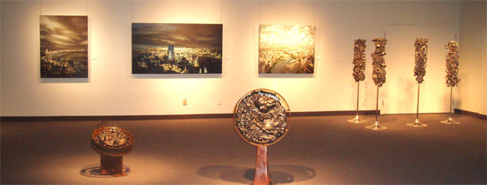

événements

en cours
- Exposition à la Bibliothèque du Complexe St. Laurent, La Prairie - 7 mai au 21 juin 2012.
- Exposition à la Maison Dupont de Mont-Saint-Hilaire (collectif).
récent
+
- Maison de la culture de Saint-Antoine-sur-Richelieu - du 27 mars au 1 mai 2011.
- Collectif d'art de la Pointe-Valaine - 26 novembre au 6 décembre 2010.
- Fête des Arts de Saint-Basile-le-Grand - 1-2-3 octobre 2010.
- Exposition de la M.R.C. de la Vallée-du-Richelieu - 21 septembre au 21 décembre 2010.
- Nature et Création, domaine des Côtes d'Ardoise de Dunham - 11 juillet au 11 octobre 2010.
- Fugue en art majeur, Otterburn Park - 5-6 juin, 12-13 juin 2010.
- Salon des arts visuels de Brossard - 23-24-25 avril 2010.
- Collectif d'art de la Pointe-Valaine - 25 au 29 novembre 2009.
- Expo-concours de La Prairie - 20 au 26 novembre 2009.
- Fugue en art majeur, Otterburn Park - 13-14 juin, 20-21 juin 2009.
- Premier collectif d'art de la Pointe-Valaine - 28-29-30 novembre 2008.
- Rencontre des arts de Saint-Jean-sur-Richelieu - 7-8-9 novembre 2008.
- Nature et Création, domaine des Côtes d'Ardoise de Dunham - 13 juillet au 14 octobre 2008.
- Fugue en art majeur, Otterburn Park - 7-8 juin, 14-15 juin 2008.
- Salon des arts visuels, centre socioculturel de Brossard - 25-26-27 avril 2008.
- Exposition rétrospective, galerie Renée-Blain de Brossard - 17 au 27 avril 2008.
- Rencontre des arts de Saint-Jean-sur-Richelieu - 9-10-11 novembre 2007.
- Galerie Renée-Blain de Brossard - 9 septembre au 4 octobre 2007.
- Fugue en art majeur, Otterburn Park - 9-10 juin, 16-17 juin 2007.
- Salon des arts visuels de Brossard - 27-28-29 avril 2007.
- Rencontre des arts de Saint-Jean-sur-Richelieu - 10-11-12 novembre 2006.
- L'Art des sens de Saint-Antoine-sur-Richelieu - 17 au 20 aout 2006.
- Fugue en art majeur, Otterburn Park - 27-28 mai, 3-4 juin 2006.
liens